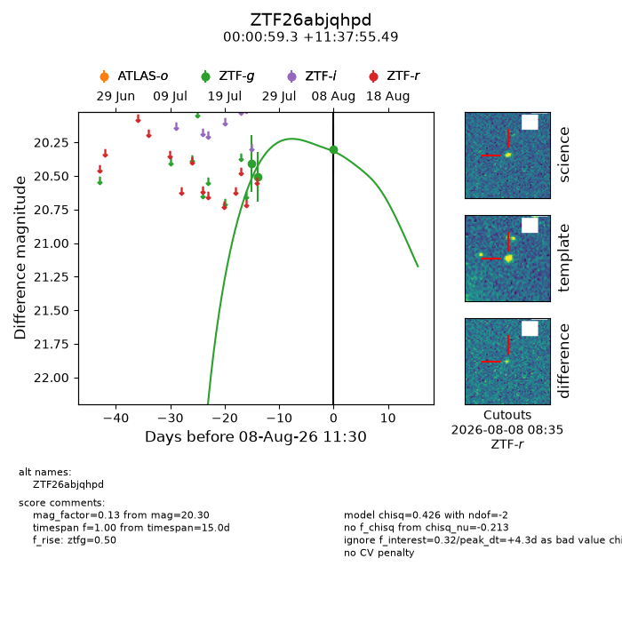
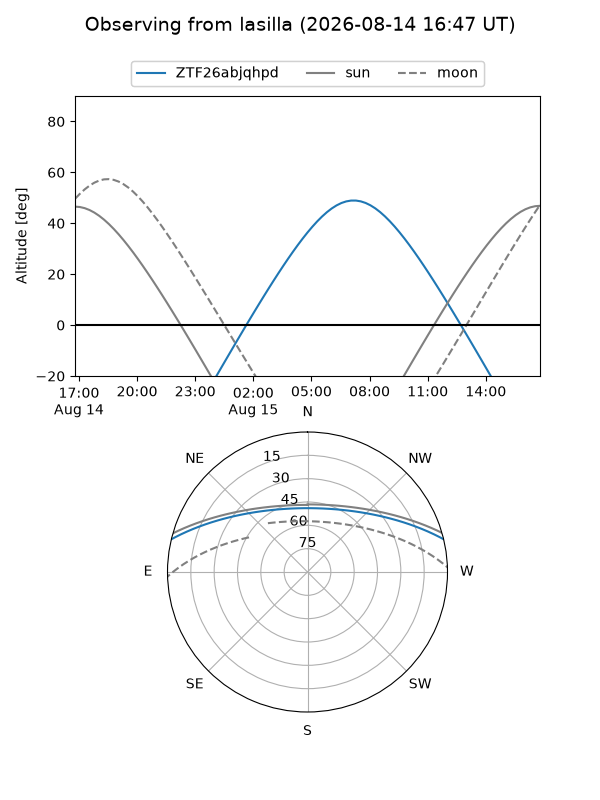
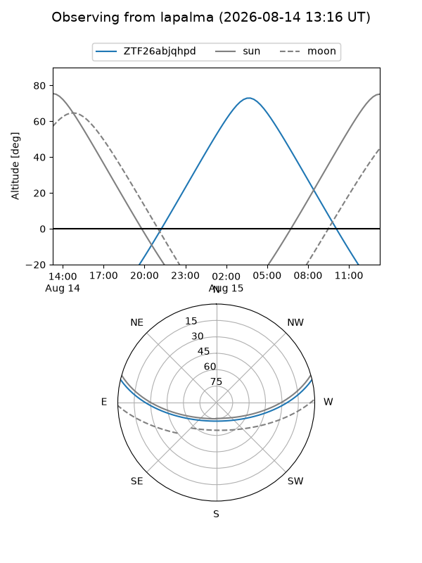
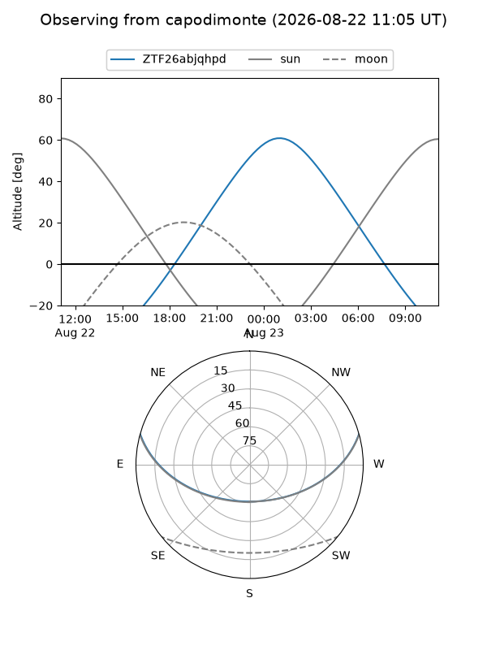
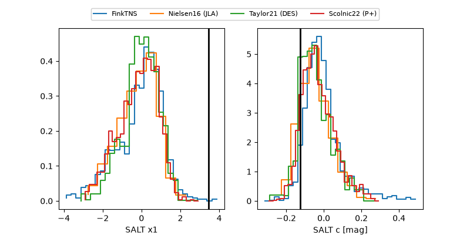

ZTF26abjqhpd
Target ZTF26abjqhpd at 2026-08-08 11:33
Aliases and brokers:
FINK-ZTF: ztf.fink-portal.org/ZTF26abjqhpd
Lasair-ZTF: lasair-ztf.lsst.ac.uk/objects/ZTF26abjqhpd
ALeRCE-ZTF: alerce.online/object/ZTF26abjqhpd
Direct TNS query: direct search
alt names
ZTF26abjqhpd (ztf,fink_ztf)
Coordinates:
equatorial (ra, dec) = 0.2470,+11.63208
equatorial (HMS+DMS) = 00:00:59.28,+11:37:55.49
galactic (l, b) = (103.7647,-49.35294)
Flags:
peak dt: +4.3
Photometry:
last ztfg=20.30
3 ztfg detections
Lightcurve

Visibility



Additional plots
